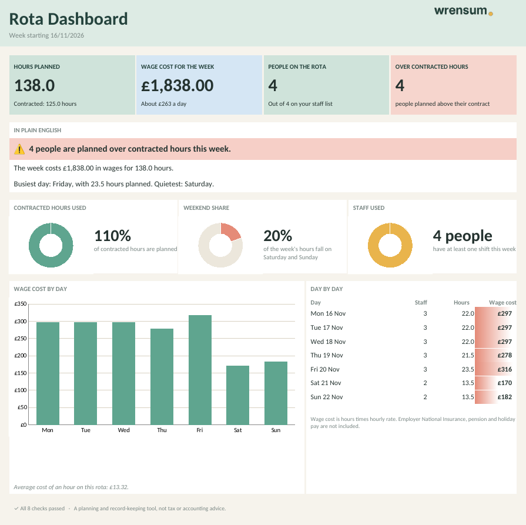

Weekly Staff Rota and Wage Cost Planner
Plan a week of shifts and see hours and wage cost per person and per day as you go.
Buy for £7One-off payment. Excel file (.xlsx), delivered as a download.

What you get
- A seven-day rota for up to 15 staff
- Hours worked out from start time, end time and break
- Shifts that run past midnight handled correctly
- Planned hours compared with contracted hours for each person
- Wage cost per person, per day and for the week
- A dashboard showing who is over their contracted hours, the busiest day and the wage cost by day
- A sheet that checks the rota for common slips, such as a shift longer than 16 hours
Who it is for
Shops, cafes, salons and small teams of up to 15 people who plan shifts week by week.
How to use it
- Enter the week's start date and your staff with their hourly rates.
- Type each shift's start, end and break.
- Check the totals for hours and wage cost.
Questions
- Does wage cost include employer costs?
- No. It is hours multiplied by hourly rate. Employer National Insurance, pension and holiday pay are not included.
- How do I plan the next week?
- Copy the Rota sheet and change the start date.
- What do I need to open it?
- Microsoft Excel. The file has also been tested in LibreOffice Calc. It contains no macros.
- Are the figures in it real?
- No. Each file comes with example figures to show the format. You type over them.